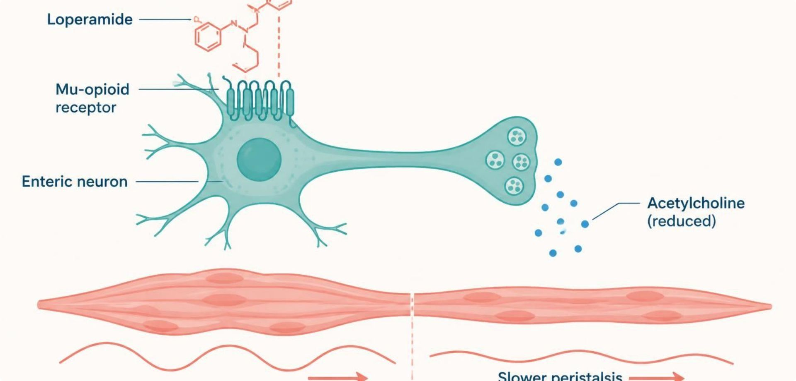

1Part 1 · Drug class
Laxatives & Antidiarrheals
SO1SO4IO3.1IO3.2IO3.3IO3.4IO3.6
Class5
- Opposite problems, each with its own family of mechanisms. Four laxative buckets: bulk-forming, osmotic, stimulant, secretagogue — sort any laxative name into one of them.S3; S3 (notes); S4 (notes); S5 (notes)
- Bulk-forming (psyllium, methylcellulose): absorb water, increase stool bulk and transit; slowest onset; generally safest for long-term use.S4
- Osmotic (polyethylene glycol, lactulose, magnesium hydroxide): draw water into the lumen; fast, reliable onset.S4
- Stimulant (senna, bisacodyl): directly stimulate enteric nerves/motility; reserve for short-term or breakthrough use.S4
- Secretagogues (lubiprostone, linaclotide): increase intestinal chloride and fluid secretion; used for chronic constipation, IBS-C.S4; S5
Prototype + other drugs named3
- Polyethylene glycol 3350 — osmotic; first-line for chronic constipation.S5
- Psyllium — bulk-forming. Senna — stimulant. Linaclotide — secretagogue.S4
- Loperamide — antidiarrheal (peripheral opioid agonist).S9
Mechanism of action6
- Laxative mechanisms: bulk-forming holds water and expands stool; osmotic draws water into the lumen; stimulant activates enteric nerves; secretagogue increases chloride and fluid secretion → softer stool, faster transit.S5
- Loperamide — a peripheral opioid-receptor agonist that slows GI motility without significant CNS (opioid) effects at normal doses.S9
- Opioid brake on the gut: opioid agonist binds mu receptors on enteric neurons → less acetylcholine release → slower peristalsis, longer transit → more water absorbed, firmer stool.S10; S10 (notes)
- Diphenoxylate/atropine — a combination opioid-receptor agonist; atropine is included at a subtherapeutic dose specifically to discourage misuse/overdose.S9; SG U3-R10
- Bismuth subsalicylate — antisecretory, mild antimicrobial, and anti-inflammatory effects; also used for dyspepsia.S9
- TBOpioid receptor antagonists (methylnaltrexone, naloxegol, naldemedine, alvimopan) block gut μ-receptors without entering the CNS, so analgesia is kept.p. 1166
+1 from the textbook
Indications2
- PEG is first-line for chronic constipation; magnesium laxatives need caution in CKD.S5
- Onset (Figure 2, illustrative): osmotic ~2 h and stimulant ~8 h act fastest; secretagogue ~1 day; stool softener ~2 days and bulk-forming ~60 h take longest. A patient who needs relief tonight is not a bulk-forming candidate.S6; S6 (notes); SG U3-R9
Adverse effects (boxed warnings first)5
- Stimulants cause cramping and are for short-term use. Lubiprostone causes nausea; linaclotide causes diarrhea.S4 (notes); S5
- Loperamide enters the CNS poorly (P-gp efflux), but very high doses can cause cardiac toxicity (QT prolongation).S9 (notes); S10
- Bismuth subsalicylate: salicylate warning; can darken stool and tongue.S9 (notes); S10
- TBMineral oil: aspiration causes lipid pneumonitis; long-term use impairs fat-soluble vitamin absorption.p. 1164
- TBSodium phosphate purgatives risk electrolyte shifts and acute renal failure — avoid in frail, elderly or renal patients.p. 1165
+2 from the textbook
Contraindications4
- Avoid antimotility agents (loperamide, diphenoxylate/atropine) in suspected infectious/inflammatory diarrhea (e.g., C. difficile, invasive bacterial infection) — can worsen outcomes by delaying toxin/pathogen clearance. Also avoid in bloody or febrile diarrhea.S9; S9 (notes); S10; SG U3-R10
- Bulk-forming agents need adequate fluids and are avoided in obstruction. Linaclotide: contraindicated in mechanical obstruction and in children under 2; secretagogues avoided in mechanical obstruction.S4 (notes); S5
- Diphenoxylate/atropine is Schedule V; avoided in young children (the slides give under 2 and under 6; the profile says under 6).S9 (notes); S10; S63
- TBAntidiarrheals should not be used with bloody diarrhea, high fever, or systemic toxicity.p. 1166
+1 from the textbook
Drug interactions2
- Psyllium: separate from other drugs by 2 hours.S55
- Bisacodyl: do not crush; avoid with antacids or milk.S59
Pharmacokinetics2
- Loperamide has limited CNS entry because of P-gp efflux.S9 (notes)
- TBSenna works in 6–12 hours orally; bisacodyl in 6–10 hours orally and 30–60 minutes rectally.p. 1165
+1 from the textbook
Monitoring1
- Slowing transit in an infectious or inflammatory process can worsen the picture (toxic megacolon risk in C. difficile) — “stopping diarrhea” is not always the right first move.S9 (notes); S11 (notes)
Clinical pearl / why
- Case: profuse watery diarrhea and fever three days after clindamycin. Is loperamide an appropriate choice for symptomatic relief in this patient? No — think C. difficile; avoid antimotility agents and treat the infection (oral vancomycin or fidaxomicin).S11; S11 (notes)
Step by step
Diarrhea: is an antimotility agent safe?S9; S11
Bloody stool, fever, or recent antibiotics?→Yes → suspect C. difficile / invasive infection→Avoid loperamide and diphenoxylate→Treat the cause (oral vancomycin or fidaxomicin)→No red flags → loperamide is reasonable



Laxative classes
| Class | Examples | How | Use / caution |
|---|---|---|---|
| Bulk-forming | Psyllium, methylcellulose | Hold water, expand stool | Slowest, safest long term; fluids; no obstruction |
| Osmotic | PEG, lactulose, magnesium hydroxide | Draw water into lumen | Fast; PEG first-line chronic; magnesium caution in CKD |
| Stimulant | Senna, bisacodyl | Activate enteric nerves | Short-term/breakthrough; cramping |
| Secretagogue | Lubiprostone, linaclotide | ↑ Chloride and fluid secretion | Chronic constipation, IBS-C; no obstruction |
How to tell them apart. Sources: S4; S5; SG U3-R9
Laxative drug profiles: formulation, dose, indications
| Drug | Class | Formulation | Adult dose | Indications |
|---|---|---|---|---|
| Polyethylene glycol 3350 (MiraLAX) | Osmotic laxative | Powder for solution (17 g scoop); large-volume bowel-prep kits | 17 g in 4-8 oz fluid PO once daily; OTC use up to 7 days | Chronic and occasional constipation; bowel preparation (higher volumes) |
| Psyllium (Metamucil) | Bulk-forming laxative | Powder, capsules, wafers | About 3.4-6 g PO 1-3 times daily with at least 8 oz water | Constipation, IBS, mild cholesterol lowering |
| Methylcellulose (Citrucel) | Bulk-forming laxative | Powder; caplets 500 mg | About 2 g PO in 8 oz water 1-3 times daily; onset 12-72 hours | Constipation, stool bulking |
| Lactulose | Osmotic laxative, ammonia-lowering agent | Oral solution 10 g/15 mL | Constipation: 15-30 mL PO daily; hepatic encephalopathy: 30-45 mL PO 3-4 times daily, titrated to 2-3 soft stools | Constipation, hepatic encephalopathy |
| Senna (Senokot) | Stimulant laxative | Tablet 8.6 mg sennosides; liquid | 8.6-17.2 mg PO at bedtime (max 34 mg/day); onset 6-12 hours | Short-term constipation, opioid-induced constipation |
| Bisacodyl (Dulcolax) | Stimulant laxative | DR tablet 5 mg; suppository 10 mg | 5-15 mg PO at bedtime; 10 mg PR once daily; PO onset 6-12 hours, PR 15-60 min | Constipation, bowel preparation |
| Lubiprostone (Amitiza) | Chloride channel (ClC-2) activator | Capsule 8/24 mcg | Chronic constipation: 24 mcg PO BID with food; IBS-C (women): 8 mcg BID | Chronic idiopathic constipation, IBS-C, opioid-induced constipation |
| Linaclotide (Linzess) | Guanylate cyclase-C agonist | Capsule 72/145/290 mcg | CIC: 72-145 mcg PO daily; IBS-C: 290 mcg daily; 30 minutes before the first meal | Chronic idiopathic constipation, IBS-C |
How to tell them apart. Sources: S54; S55; S56; S57; S58; S59; S60; S61
Laxative drug profiles: adverse effects, contraindications, toxicity
| Drug | Adverse effects | Contraindications | Toxicity / overdose |
|---|---|---|---|
| Polyethylene glycol 3350 (MiraLAX) | Bloating, nausea, gas, loose stools | Bowel obstruction, perforation, ileus, toxic megacolon | Dehydration and electrolyte loss with excess or bowel-prep volumes; rare allergic reactions |
| Psyllium (Metamucil) | Bloating, gas, abdominal fullness | Bowel obstruction, fecal impaction, dysphagia | Esophageal or intestinal obstruction if taken with too little fluid; allergy; separate from other drugs by 2 hours |
| Methylcellulose (Citrucel) | Bloating, gas | Bowel obstruction, dysphagia | Obstruction if taken without adequate fluid; may slow absorption of other drugs |
| Lactulose | Gas, bloating, cramps, diarrhea | Galactosemia, bowel obstruction | Dehydration and hypernatremia with over-use; worsens diabetes control slightly |
| Senna (Senokot) | Cramping, diarrhea, urine discoloration, melanosis coli | Bowel obstruction, appendicitis, undiagnosed abdominal pain | Hypokalemia and dehydration with chronic use; laxative dependence |
| Bisacodyl (Dulcolax) | Cramping, nausea, rectal irritation | Bowel obstruction, appendicitis, acute abdomen | Do not crush; avoid with antacids or milk; excess causes diarrhea, hypokalemia |
| Lubiprostone (Amitiza) | Nausea, diarrhea, headache, abdominal pain | Mechanical GI obstruction | Dizziness, syncope or dyspnea (rare); overdose: nausea, diarrhea; avoid in pregnancy unless needed |
| Linaclotide (Linzess) | Diarrhea, abdominal pain, gas, bloating | Boxed: children under 2 years; mechanical GI obstruction | Severe dehydration (deaths in young children); severe diarrhea; stop if severe or prolonged |
How to tell them apart. Sources: S54; S55; S56; S57; S58; S59; S60; S61
Antidiarrheal drug profiles: formulation, dose, indications
| Drug | Class | Formulation | Adult dose | Indications |
|---|---|---|---|---|
| Loperamide (Imodium) | Peripheral mu-opioid agonist | Capsule 2 mg; tablet 2 mg; oral liquid | 4 mg PO first dose, then 2 mg after each loose stool; max 16 mg/day Rx, 8 mg/day OTC | Acute and chronic diarrhea, traveler's diarrhea |
| Diphenoxylate/atropine (Lomotil) | Opioid antidiarrheal (C-V) plus anticholinergic | Tablet 2.5 mg/0.025 mg; oral liquid 2.5 mg/5 mL | 5 mg (2 tablets) PO QID initially; max 20 mg/day; reduce as controlled | Adjunct for diarrhea |
How to tell them apart. Sources: S62; S63
Antidiarrheal drug profiles: adverse effects, contraindications, toxicity
| Drug | Adverse effects | Contraindications | Toxicity / overdose |
|---|---|---|---|
| Loperamide (Imodium) | Constipation, cramps, dizziness, nausea | Bloody stool or high fever, C. difficile, children under 2, ileus | High doses: QT prolongation, torsades, cardiac arrest; CNS depression in overdose (naloxone, repeated) |
| Diphenoxylate/atropine (Lomotil) | Drowsiness, dry mouth, tachycardia, urinary retention | Children under 6 years, obstructive jaundice, C. difficile or infectious diarrhea | Respiratory depression (especially children) and anticholinergic toxicity; naloxone, with monitoring for relapse |
How to tell them apart. Sources: S62; S63
Other bowel drugs in the reading (textbook)
| Group | Drugs | Point |
|---|---|---|
| Bulk-forming laxatives | Psyllium, methylcellulose, polycarbophil | Hydrophilic gel distends colon; bloating, flatus |
| Stool surfactant agents (softeners) | Docusate, glycerin, mineral oil | Mineral oil: lipid pneumonitis if aspirated |
| Osmotic laxatives; balanced polyethylene glycol | Magnesium, sorbitol, lactulose; PEG lavage | PEG causes no significant cramps or flatus; bowel prep 1–2 L |
| Stimulant laxatives: anthraquinone and diphenylmethane derivatives | Senna, cascara (melanosis coli); bisacodyl | Long-term use probably safe in most |
| Chloride secretion activators | Lubiprostone (ClC-2); linaclotide, plecanatide (GC-C) | Nausea up to 30% (lubiprostone); diarrhea up to 20% (linaclotide) |
| Opioid receptor antagonists | Methylnaltrexone, naloxegol, naldemedine, alvimopan | Opioid-induced constipation; alvimopan postoperative ileus only |
| Serotonin 5-HT4-receptor agonists | Prucalopride | Chronic constipation; 1 mg/day if CrCl < 30 |
| Antidiarrheal agents: opioid agonists | Loperamide, diphenoxylate, eluxadoline | Eluxadoline: IBS-D; sphincter of Oddi spasm |
| Colloidal bismuth compounds | Bismuth subsalicylate | Traveler’s diarrhea |
| Bile salt-binding resins | Cholestyramine, colestipol, colesevelam | Bile-acid diarrhea; separate other drugs by 2 hours |
| Octreotide | Somatostatin analog | Secretory tumor diarrhea; gallstones with long-term use |
| IBS: antispasmodics (anticholinergics) | Dicyclomine, hyoscyamine | Short-term pain relief; anticholinergic effects |
| IBS: serotonin 5-HT3-receptor antagonists | Alosetron | Women with severe IBS-D; ischemic colitis, severe constipation |
| IBS: chloride channel activators | Lubiprostone 8 mcg twice daily; linaclotide 290 mcg | IBS-C |
How to tell them apart. Sources: p. 1164; p. 1165; p. 1166; p. 1167; p. 1168
Slide discrepancy
- Age cutoff for diphenoxylate/atropine
- Slides: Avoid in children under 2 (S9 notes); under 6 (S10, S63).S9 (notes); S10; S63
- Textbook: Small amounts of atropine are added to discourage overdosage (no age cutoff given).p. 1166
Why it happens
- Why is atropine in Lomotil? At the tiny dose given it does nothing — but anyone taking big doses to get high gets unpleasant anticholinergic effects.S9; SG U3-R10
- Why not loperamide in C. difficile? Slowing transit keeps toxin in the colon longer — toxic megacolon risk.S9 (notes); SG U3-R10
High-yield
- Four laxative buckets: bulk-forming (slowest, safest), osmotic (fast; PEG first-line), stimulant (short-term), secretagogue (IBS-C).S4; S5
- No antimotility agents in C. difficile or bloody/febrile diarrhea.S9; SG U3-R10